Changes in PRIMAP-hist v2.6.1_final compared to v2.6_final for Niger
2025-03-19
Johannes Gütschow
Change analysis for Niger for PRIMAP-hist v2.6.1_final compared to v2.6_final
Overview over emissions by sector and gas
The following figures show the aggregate national total emissions excluding LULUCF AR6GWP100 for the country reported priority scenario. The dotted linesshow the v2.6_final data.
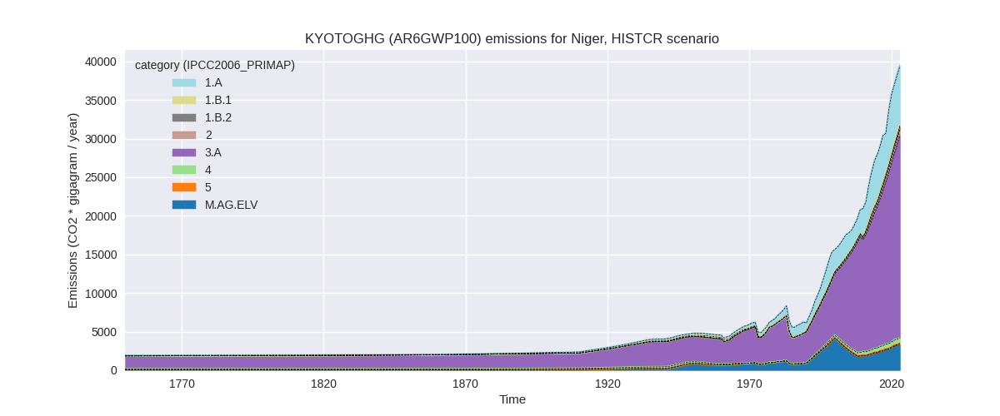

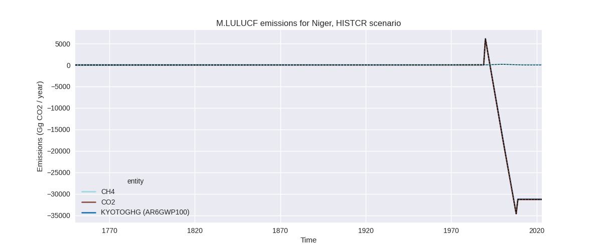
The following figures show the aggregate national total emissions excluding LULUCF AR6GWP100 for the third party priority scenario. The dotted linesshow the v2.6_final data.
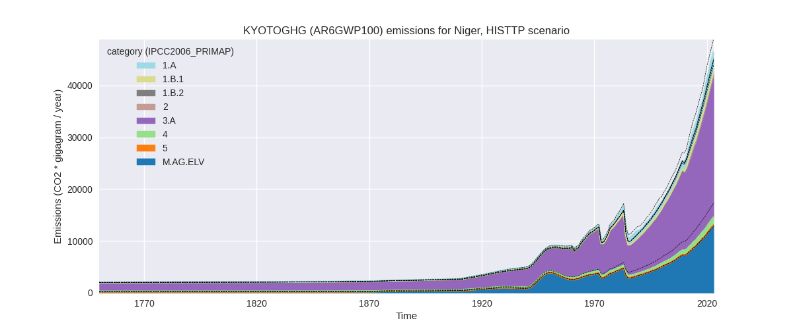
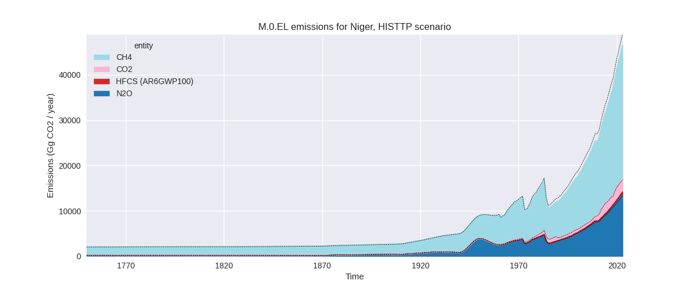
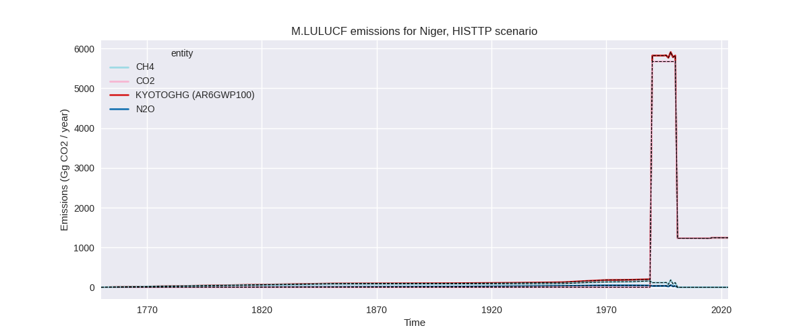
Overview over changes
In the country reported priority scenario we have the following changes for aggregate Kyoto GHG and national total emissions excluding LULUCF (M.0.EL):
- Emissions in 2023 have changed by 0.2%% (81.19 Gg CO2 / year)
- Emissions in 1990-2023 have changed by 0.1%% (14.78 Gg CO2 / year)
In the third party priority scenario we have the following changes for aggregate Kyoto GHG and national total emissions excluding LULUCF (M.0.EL):
- Emissions in 2023 have changed by -5.2%% (-2552.69 Gg CO2 / year)
- Emissions in 1990-2023 have changed by -5.9%% (-1576.09 Gg CO2 / year)
Most important changes per scenario and time frame
In the country reported priority scenario the following sector-gas combinations have the highest absolute impact on national total KyotoGHG (AR6GWP100) emissions in 2023 (top 5):
- 1: 3.A, CH4 with 137.24 Gg CO2 / year (0.5%)
- 2: M.AG.ELV, CH4 with -82.48 Gg CO2 / year (-22.4%)
- 3: 1.A, CH4 with -45.58 Gg CO2 / year (-2.9%)
- 4: 1.B.2, CH4 with 44.29 Gg CO2 / year (24.6%)
- 5: M.AG.ELV, N2O with 34.72 Gg CO2 / year (1.2%)
In the country reported priority scenario the following sector-gas combinations have the highest absolute impact on national total KyotoGHG (AR6GWP100) emissions in 1990-2023 (top 5):
- 1: 1.B.2, CH4 with 12.53 Gg CO2 / year (18.7%)
- 2: 3.A, CH4 with 8.24 Gg CO2 / year (0.1%)
- 3: 1.B.2, CO2 with -6.18 Gg CO2 / year (-9.8%)
- 4: M.AG.ELV, CH4 with -3.05 Gg CO2 / year (-1.9%)
- 5: 4, N2O with 2.61 Gg CO2 / year (0.9%)
In the third party priority scenario the following sector-gas combinations have the highest absolute impact on national total KyotoGHG (AR6GWP100) emissions in 2023 (top 5):
- 1: 4, CH4 with -2775.14 Gg CO2 / year (-70.5%)
- 2: M.AG.ELV, N2O with 145.78 Gg CO2 / year (1.2%)
- 3: 3.A, CH4 with 139.95 Gg CO2 / year (0.5%)
- 4: M.AG.ELV, CH4 with -67.50 Gg CO2 / year (-22.4%)
- 5: 1.B.2, CH4 with 44.29 Gg CO2 / year (24.6%)
In the third party priority scenario the following sector-gas combinations have the highest absolute impact on national total KyotoGHG (AR6GWP100) emissions in 1990-2023 (top 5):
- 1: 4, CH4 with -1597.71 Gg CO2 / year (-70.1%)
- 2: 1.B.2, CH4 with 12.53 Gg CO2 / year (18.7%)
- 3: 3.A, CH4 with 8.41 Gg CO2 / year (0.1%)
- 4: M.AG.ELV, N2O with 7.19 Gg CO2 / year (0.1%)
- 5: 1.B.2, CO2 with -6.18 Gg CO2 / year (-9.8%)
Notes on data changes
Here we list notes explaining important emissions changes for the country.
- No new country reported data has been included. Country reported data covers only 1990, 2000, and 2008 thus the third party data has a high influence on the CR time-series. Changes in the CR time-series are small or in sectors with a small contribution to total emissions and come from updated third party data (EDGAR, FAO) which is used to extrapolate the country reported data. Data in 1.B.2 is directly from EDGAR.
- In the TP scenario the changes are for similar sectors with the addition of a high reduction of waste CH4 emissions from EDGAR data.
Changes by sector and gas
For each scenario and time frame the changes are displayed for all individual sectors and all individual gases. In the sector plot we use aggregate Kyoto GHGs in AR6GWP100. In the gas plot we usenational total emissions without LULUCF.
country reported scenario
2023
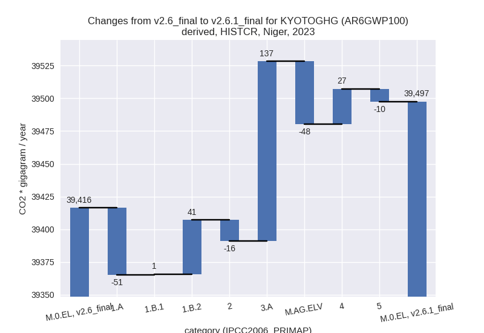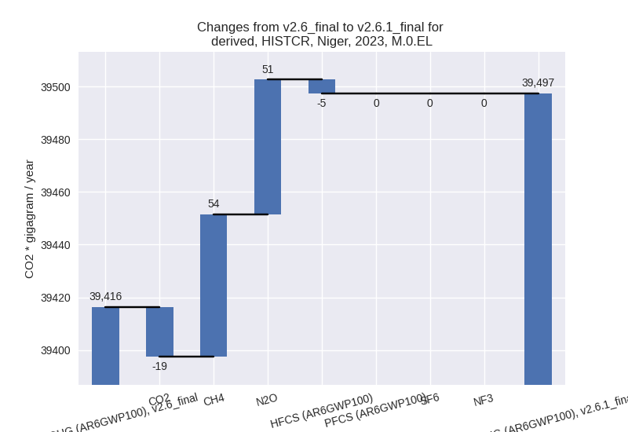
1990-2023
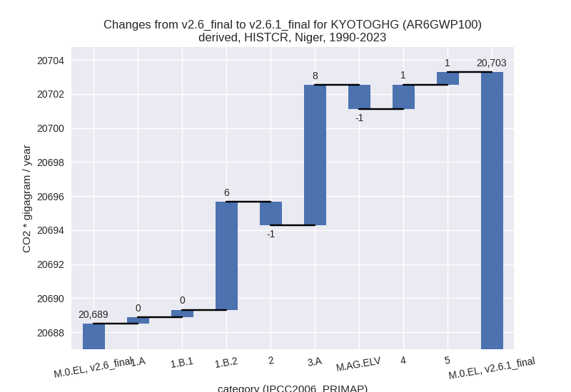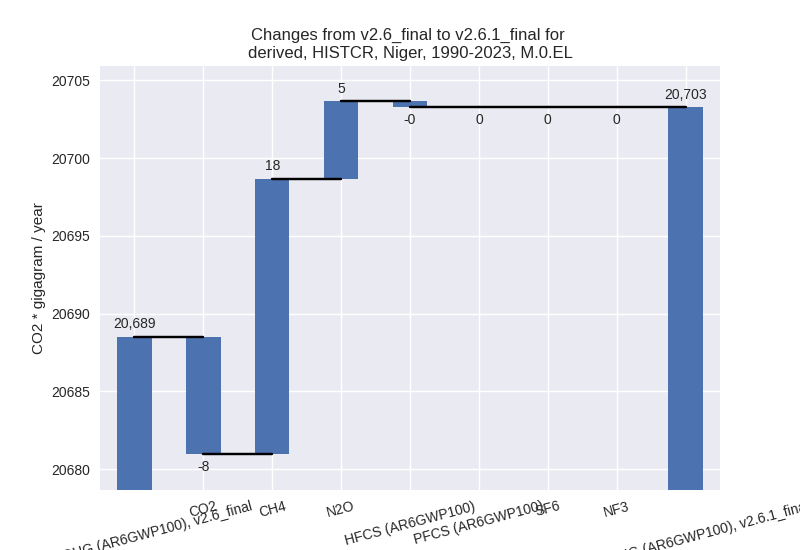
third party scenario
2023
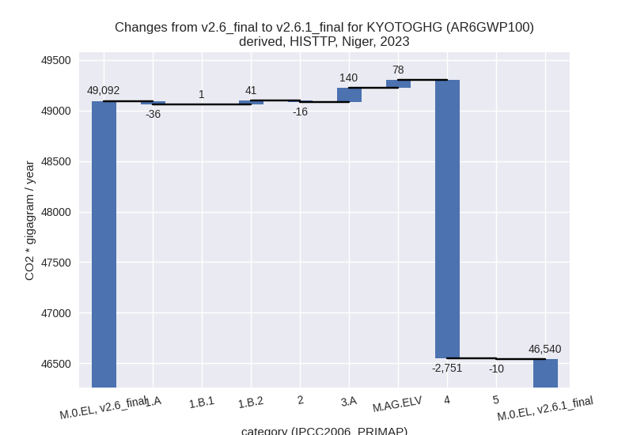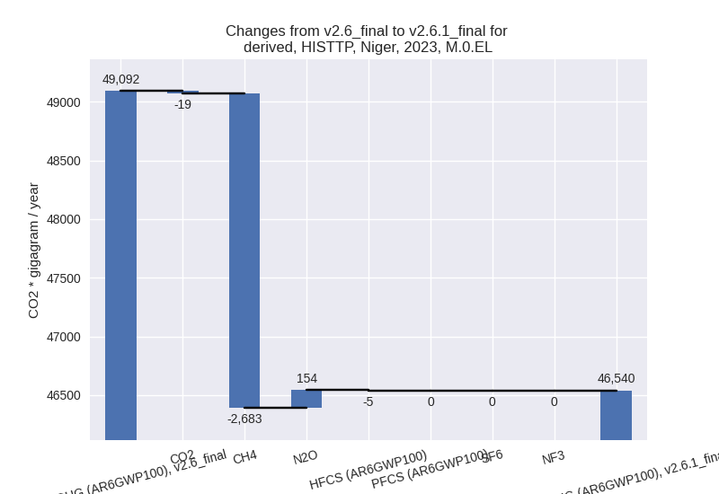
1990-2023
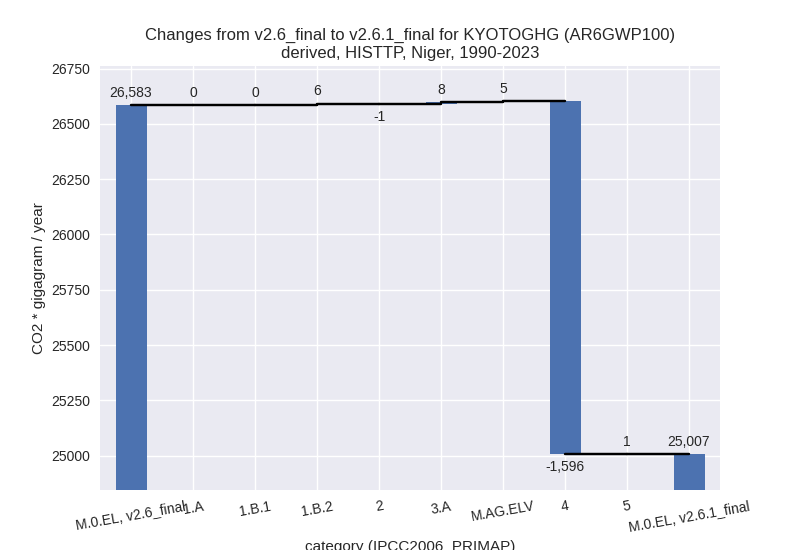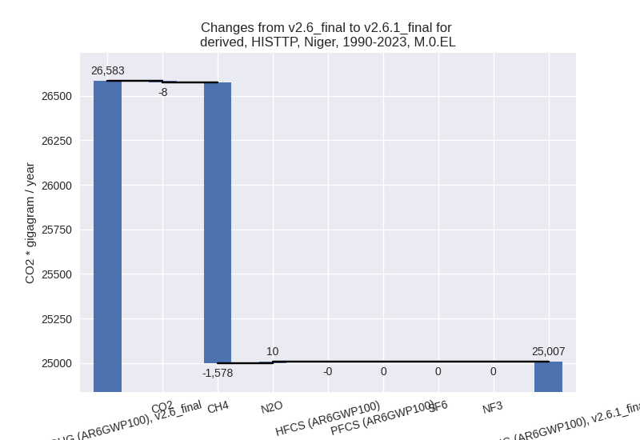
Detailed changes for the scenarios:
country reported scenario (HISTCR):
Most important changes per time frame
For 2023 the following sector-gas combinations have the highest absolute impact on national total KyotoGHG (AR6GWP100) emissions in 2023 (top 5):
- 1: 3.A, CH4 with 137.24 Gg CO2 / year (0.5%)
- 2: M.AG.ELV, CH4 with -82.48 Gg CO2 / year (-22.4%)
- 3: 1.A, CH4 with -45.58 Gg CO2 / year (-2.9%)
- 4: 1.B.2, CH4 with 44.29 Gg CO2 / year (24.6%)
- 5: M.AG.ELV, N2O with 34.72 Gg CO2 / year (1.2%)
For 1990-2023 the following sector-gas combinations have the highest absolute impact on national total KyotoGHG (AR6GWP100) emissions in 1990-2023 (top 5):
- 1: 1.B.2, CH4 with 12.53 Gg CO2 / year (18.7%)
- 2: 3.A, CH4 with 8.24 Gg CO2 / year (0.1%)
- 3: 1.B.2, CO2 with -6.18 Gg CO2 / year (-9.8%)
- 4: M.AG.ELV, CH4 with -3.05 Gg CO2 / year (-1.9%)
- 5: 4, N2O with 2.61 Gg CO2 / year (0.9%)
Changes in the main sectors for aggregate KyotoGHG (AR6GWP100) are
- 1: Total sectoral emissions in 2022 are 8350.53 Gg CO2 / year which is 21.7% of M.0.EL emissions. 2023 Emissions have changed by -0.1% (-9.20 Gg CO2 / year). 1990-2023 Emissions have changed by 0.2% (7.17 Gg CO2 / year).
- 2: Total sectoral emissions in 2022 are 802.55 Gg CO2 / year which is 2.1% of M.0.EL emissions. 2023 Emissions have changed by -1.9% (-16.20 Gg CO2 / year). 1990-2023 Emissions have changed by -0.5% (-1.39 Gg CO2 / year).
- M.AG: Total sectoral emissions in 2022 are 28453.96 Gg CO2 / year which is 74.0% of M.0.EL emissions. 2023 Emissions have changed by 0.3% (89.56 Gg CO2 / year). 1990-2023 Emissions have changed by 0.0% (6.84 Gg CO2 / year).
- 4: Total sectoral emissions in 2022 are 725.09 Gg
CO2 / year which is 1.9% of M.0.EL emissions. 2023 Emissions have
changed by 3.7% (26.73 Gg CO2 /
year). 1990-2023 Emissions have changed by 0.4% (1.43 Gg CO2 / year). For 2023 the
changes per gas
are:
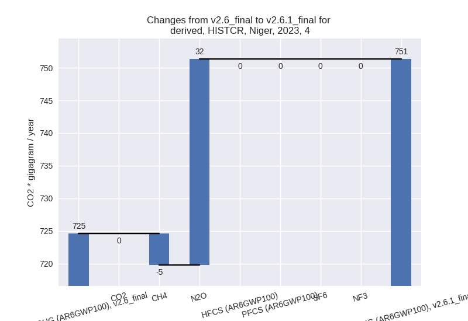 - 5: Total sectoral emissions in 2022 are 111.32 Gg
CO2 / year which is 0.3% of M.0.EL emissions. 2023 Emissions have
changed by -8.2% (-9.70 Gg CO2 /
year). 1990-2023 Emissions have changed by 1.2% (0.73 Gg CO2 / year). For 2023 the
changes per gas
are:
third party scenario (HISTTP):
Most important changes per time frame
For 2023 the following sector-gas combinations have the highest absolute impact on national total KyotoGHG (AR6GWP100) emissions in 2023 (top 5):
- 1: 4, CH4 with -2775.14 Gg CO2 / year (-70.5%)
- 2: M.AG.ELV, N2O with 145.78 Gg CO2 / year (1.2%)
- 3: 3.A, CH4 with 139.95 Gg CO2 / year (0.5%)
- 4: M.AG.ELV, CH4 with -67.50 Gg CO2 / year (-22.4%)
- 5: 1.B.2, CH4 with 44.29 Gg CO2 / year (24.6%)
For 1990-2023 the following sector-gas combinations have the highest absolute impact on national total KyotoGHG (AR6GWP100) emissions in 1990-2023 (top 5):
- 1: 4, CH4 with -1597.71 Gg CO2 / year (-70.1%)
- 2: 1.B.2, CH4 with 12.53 Gg CO2 / year (18.7%)
- 3: 3.A, CH4 with 8.41 Gg CO2 / year (0.1%)
- 4: M.AG.ELV, N2O with 7.19 Gg CO2 / year (0.1%)
- 5: 1.B.2, CO2 with -6.18 Gg CO2 / year (-9.8%)
Changes in the main sectors for aggregate KyotoGHG (AR6GWP100) are
- 1: Total sectoral emissions in 2022 are 4393.88 Gg CO2 / year which is 9.8% of M.0.EL emissions. 2023 Emissions have changed by 0.1% (6.39 Gg CO2 / year). 1990-2023 Emissions have changed by 0.3% (7.03 Gg CO2 / year).
- 2: Total sectoral emissions in 2022 are 733.49 Gg
CO2 / year which is 1.6% of M.0.EL emissions. 2023 Emissions have
changed by -2.0% (-16.20 Gg CO2 /
year). 1990-2023 Emissions have changed by -0.5% (-1.39 Gg CO2 / year). For 2023 the
changes per gas
are:
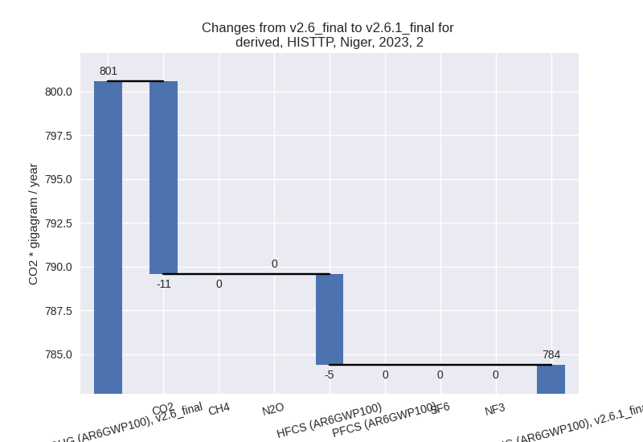 - M.AG: Total sectoral emissions in 2022 are 38215.02 Gg CO2 / year which is 85.0% of M.0.EL emissions. 2023 Emissions have changed by 0.6% (218.31 Gg CO2 / year). 1990-2023 Emissions have changed by 0.1% (13.29 Gg CO2 / year).
- 4: Total sectoral emissions in 2022 are 1489.46 Gg
CO2 / year which is 3.3% of M.0.EL emissions. 2023 Emissions have
changed by -64.1% (-2751.49 Gg CO2 /
year). 1990-2023 Emissions have changed by -64.4% (-1595.75 Gg CO2 / year). For 2023
the changes per gas
are:

For 1990-2023 the changes per gas are:
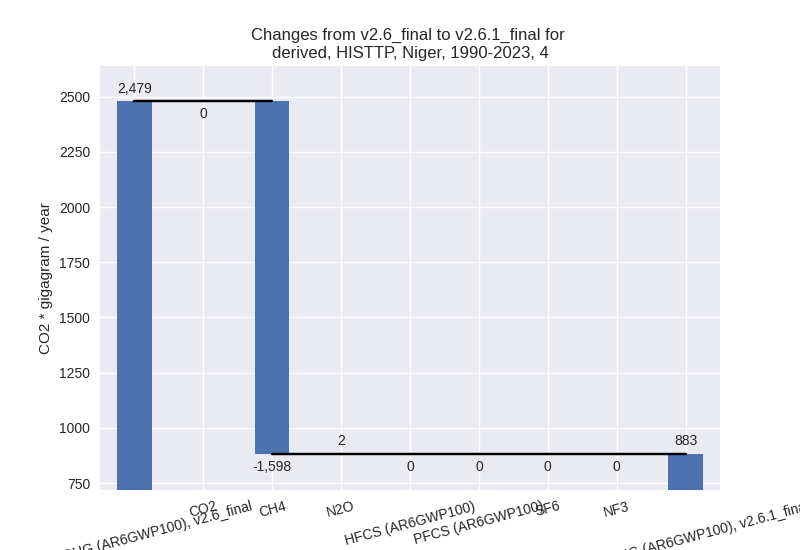 - 5: Total sectoral emissions in 2022 are 111.32 Gg
CO2 / year which is 0.2% of M.0.EL emissions. 2023 Emissions have
changed by -8.2% (-9.70 Gg CO2 /
year). 1990-2023 Emissions have changed by 1.2% (0.73 Gg CO2 / year). For 2023 the
changes per gas
are:
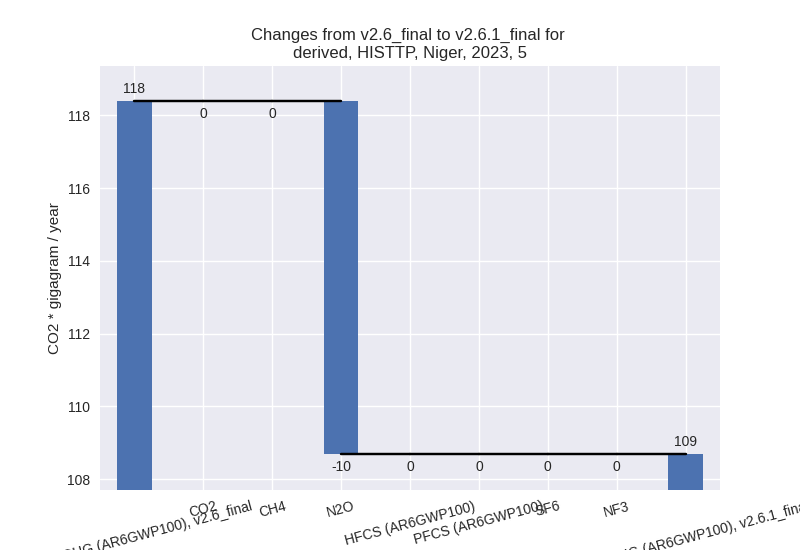